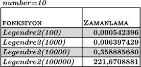

(Euler 7) 10001. Asal Sayı (SİLİNMİŞ SAHNELER)
Bu yazıya 7. Euler Probleminin çözümüyle ilgili birşeyler yazma niyetiyle başlamıştım. Ancak, yazdıkça asıl konudan çok uzaklaştığımı farkedip, yeniden başlamaya karar verdim. Yine de, yazdıklarımı kaybetmek istemedim, olduğu kadarıyla yayınlıyorum.
İlk 6 asal sayıyı listelersek: 2, 3, 5, 7, 11, ve 13, 6. asal sayının 13 olduğunu görürüz.
10001'inci asal sayı kaçtır.
3. Euler problemi çözümünde belli bir aralıktaki asal sayıları tespit etmek için Eratosten Kalburu yöntemini kullanmıştık. Bu yöntemde, belli bir aralıktaki asal sayıları tespit etmek için, asal olduğunu kanıtladığımız sayıların katlarını listeden silme yöntemini kullandık. Bu yöntem sayesinde, hızlı bir şekilde asal sayı tespiti yapabilmiştik. Hatırlatma amacıyla, kodlarımıza tekrar bir göz atalım.
Euler Problemleri orjinal olarak modern bilgisayalara nazaran çok daha zayıf
bilgisayalar göz önünde bulunarak tasarlandığı için, biz euler problemini
100001. asal sayı için çözeceğiz. Hedefimiz, bu sonuca 1sn'den daha hızlı bir
şekilde ulaşmak. Bu problemin çözümü için, basit_sieve yöntemini doğrudan
kullanamayız, çünkü, 100001. asal sayıyı tespit etmek için, kaçıncı sayıya
kadar olan asal sayıları bulmamız gerektiğini bilmiyoruz. Bu nedenle, 100001.
asal sayıya ulaşana dek, gelismis_sieve fonksiyonunu çalıştıracağız. İlk
denemem aşağıdaki şekilde olacak:
Bu kodlar 100001. asal sayı için benim bilgisayarımda ortalama 6.3sn'de
tamamlanıyor. Daha iyisini yapabilir miyiz? Burada akla gelen ilk optimizasyon,
gelismis_sieve fonksiyonunun çağrılma sayısını azaltmak, hatta mümkün
olursa, bu fonksiyonun yerine, sadece basit_sieve fonksiyonu ile sonuca
ulaşmak. Çünkü, gelismis_sieve çalışabilmek için, basit_sieve fonksiyonun
yaptığı bazı işlemleri tekrar etmek zorunda olduğundan, performans kaybına yol
açıyor.
Küçük bir gözlemle, hesap yapmaya çok daha iyi bir noktadan başlayabiliriz. Dikkat ederseniz, bir sayıya kadar olan asalların sayısı o sayının yarısından fazla olamaz. Örneğin, 100'e kadar olan asal sayılar en fazla 50 adet olabilir, çünkü, 2 hariç çift sayılar asal olamazlar. İkinin kendisi asal sayı olduğu için bu sınırın 51 olması gerektiğini düşünebilirsiniz, ancak, 1 sayısı asal olmadığından hesap tekrar 50'ye geri düşüyor. Bir sayıya kadar olan asalların sayısını veren fonksiyona \(\pi(x)\) dersek, \(\pi(x)<=\frac{x}{2}\) olduğunu kanıtlamış olduk. Programın başlangıç parametleri biraz daha optimize olduğundan, her döngüde üst sınırı 2 kat artırmak yerine, 1.6 kat artırmak daha uygun olur tahmininden yola çıkarak (1.6 tamamen tahmin üzerine verilmiş bir değer, siz bununla oynayarak farklı ihtimaller deneyebilirsiniz), kodları aşağıdaki şekilde revize edebiliriz.
|
def euler7(x):
|
|
|
|
p = basit_sieve(2*x)
|
|
|
|
while len(p) < x:
|
|
p = gelismis_sieve(int(1.6*max(p)), p)
|
|
|
|
return p[x-1]
|
Yukardaki versiyon benim bilgisayarımda 1.9-2.0 saniye ortalamasında sonuç veriyor. İlk versiyona göre oldukça başarılı. Daha iyisini yapabilir miyiz? İkinin katlarını hesapladığımız gibi, üçün katlarını da hesaba dahil ederek, ilk tahmini biraz daha güçlendirebiliriz.Yeni tahminimiz \(\pi(x) <= x - \frac{x}{2} - \frac{x}{3} + \frac{x}{6}\). Bu aralıkta hem ikinin hem de üçün katı olan sayılar iki kere çıkarma işlemine tabi tutulduğundan, hesabı düzeltmek için altının katı olan sayıları tekrar tahmine ekledik. Yukarıdaki ifadeyi sadeleştirirsek, yeni tahminimiz \(\pi(x)<=\frac{x}{3}\) oldu. Kodları tekrar revize edebiliriz.
|
def euler7(x):
|
|
|
|
p = basit_sieve(3*x)
|
|
|
|
while len(p) < x:
|
|
p = gelismis_sieve(int(1.2*max(p)), p)
|
|
|
|
return p[x-1]
|
Bu kodları çalıştırdığımda, yaklaşık olarak ikinci versiyonla aynı sonucu aaldım. Ciddi bir ilerleme kaydedemedik gibi görünüyor.
Peki basit_sieve fonksiyonunu tamamen bir kenara bırakamaz mıyız? Netice
itibariyle, ilk yüzbin asal sayının hangileri olduğunu bilmemize gerek yok.
Ancak, bunu yapabilmek için, ilk yüzbin asal sayıyı bilmeden, yüzbinbirinci
sırada olduğumuzu bilmemiz gerekiyor. Bunu yapabilmek için de, \(\pi(x)\)
değerini tahmini olarak değil, tam olarak hesaplamamız gerek. \(\pi(x)\)'i
tam olarak hesaplayabildiğimiz durumda x yerine farklı sayılar deneyerek,
\(\pi(300000)<1000<\pi(1500000)\) benzeri bir eşitsizlik elde edip, aralığı
daralta daralta istediğimiz sayıya ulaşabiliriz.
Eğer 2'nin ve 3'ün katlarında yaptığımız gibi, belli bir aralıktaki sayıların içinden, asal sayıların katları olan - dolayısıyla asal olmayan - sayıları çıkarırsak, geriye sadece asal sayılar kalır. Bizim istediğimiz de bu. Bir tek problemimiz var, 2'nin, 3'ün ve 5'in katsayılarını silmek istediğimizde işler bir adım daha karmaşıklaşacak. \(S(2)\) ikinin katlarının sayısı, \(S(3)\) üçün katlarının sayısı, \(S(5)\)'in katlarının sayısı dersek;
$$\begin{eqnarray} S(2 \cup 3 \cup 5) &= S(2) + S(3) + S(5) \\ & -(S(2 \cap 3) + S(2 \cap 5) + S(3 \cap 5)) \\ & + S(2 \cap 3 \cap 5) \\ \end{eqnarray}$$
Elemek istediğimiz asal sayılar, birkaçdan daha fazla olduğunda nasıl bir yöntem izleyeceğiz?
Ekleme - Çıkarma Prensibi
Yukarıda kullandığımız yöntemin daha genel şekline Kombinatorik teoride Ekleme-Çıkarma prensibi demişler. Prensibin genel şekli matematik notasyonunda aşağıdaki şekilde gösterilir.
$$ \begin{align} \left|\bigcup_{i=1}^n A_i\right| = {} & \sum_{i=1}^n |A_i| - \sum_{1 \le i < j \le n} |A_i\cap A_j| + \cdots {} \\ & {} \cdots + \sum_{1 \le i < j < k \le n} |A_i \cap A_j\cap A_k| - \cdots + (-1)^{n-1} \left|A_1\cap\cdots\cap A_n\right|. \end{align} $$
Birçok garip sembol, büyüklü küçüklü harfler falan, formül kafa karıştırmasın. Biz kelimelerle ifade edelim. Birden fazla kümenin birleşiminin eleman sayısını hesaplarken, önce kümelerin teker teker eleman sayılarını toplayacağız. Daha sonra, ikili kesişimlerinin eleman sayılarını çıkaracağız. Sonra 3'lü kesişimlerinin eleman sayılarını geri ekleyeceğiz, sonra 4lü kesişimlerinin eleman sayılarını geri çıkaracağız, vs... Adı üstünde ekleme çıkarma prensibi. Prensip güzelmiş, Python ile yapalım. Birden başlayıp, bir üst sınıra kadar olan sayılar içinde, listemizdeki sayılara bölünmeyen kaç sayı olduğunu hesaplayalım.
Fonksiyon güzel oldu, küçük birkaç modifikasyon ile \(\pi(x)\) fonksiyonunu kesin olarak hesaplayabiliriz.
Legendre’nin Formulü
$$ \pi(x) + 1 = \pi(\sqrt{x}) + \lfloor x \rfloor - \sum_{p_i \leq \sqrt{x}} \left \lfloor \frac{x}{p_i} \right \rfloor + \sum_{p_i < p_j \leq \sqrt{x}} \left \lfloor \frac{x}{p_i p_j} \right \rfloor - \sum_{p_i < p_j < p_k \leq \sqrt{x}} \left \lfloor \frac{x}{p_i p_j p_k} \right \rfloor + \dots $$
Eratosten kalburu yönteminden bildiğimiz üzere, 1 ile \(n\) arasındaki asal sayıları bulmak için, kalburu \(\sqrt{n}\) sayısına kadar işletiyoruz. Neden? Diyelim ki, 2..100 aralığındaki asal sayıları bulmak istiyoruz. Bunun için bu aralıktaki 2, 3, 5 ve 7 sayılarının katlarını temizliyoruz. 11 ve daha büyük asalların katlarını temizlemeye ihtiyacımız yok, çünkü, bunların katları aynı zamanda 2,3,5 veya 7'nin katları olmak zorunda. Aynı fikir, Legendre’nin Formulü yönteminde de kullanılmış. Ekleme-Çıkarma prensibi ile birleştirince, yukarıdaki formül ortaya çıkıyor. Python ile yapalım;
Fonksiyonun çalışma süresini test etmek için uygun bir zaman.
Hmm. Bir sorunumuz var. Bu fonksiyonun çalışması oldukça uzun sürüyor. Aslını söylemek gerekirse, Legendre'nin formulü, asal sayıları saymak için
pek etkili bir yöntem değil. Ancak, bu kadar yavaş çalışmasında bizim de payımız var. Formulün orjinaline bağlı kalmak adına, yapılacak bir takım
optimizasyonlardan vazgeçtik. ekle_cikar fonksiyonunu optimize ederek, biraz hız kazanabiliriz. ekle_cikar fonksiyonunun ilk versiyonunda
bir sürü gereksiz kombinasyon hesaplıyoruz. Mesela, \(\pi(200)\) hesaplanırken, 200'den küçük ve 2,3,5,7 ve 11'in ortak katı olan herhangi bir
sayı olamayacağını biliyoruz, çünkü \(ekok(2,3,5,7,11) = 2310\). Bu durumda, 2,3,5,7 ve 13 sayılarının ortak katını kontrol etmeye gerek yok, çünkü
bu bir öncekinden bile daha büyük bir sayı olamak zorunda. Eğer kombinasyon hesabını fonksiyonumuzun içine dahil edersek,
gereksiz kombinasyon hesapları yapmaktan kurtulabiliriz. Böylece fonksiyonumuz hızlanacaktır.
Bu optimizasyon yüzünden, fonksiyonumuz oldukça karmaşık bir hal aldı. Yukarıda neler döndüğünü anlamakta güçlük çekerseniz, fazla kafaya takmayın. Yazının ilerleyen bölümlerinde asal sayı saymak için daha etkin bir algoritmayı inceleyeceğiz. Şimdiye kadar yaptıklarımız, o algoritmayı anlamaya yardımcı olacak fikir egzersizleri. Yine de, yaptığımız optimizasyonu bir test edelim.

Çok daha iyi, ama hala Eratosten kalburunun yerini tutamaz. Yalnız hafıza gereksinimi bir hayli düşük. Hafıza problemi yaşayacak kadar büyük sayılarla muhatap olacaksanız, bu fonksiyonu (mümkünse C ile yazarak) deneyebilirsiniz, ancak, biraz beklemeyi göze almanız gerekiyor. Biz asıl konumuza dönelim.
Meissel-Lehmer Algoritması
Şu ana kadar yaptıklarımız bizi sonuca pek yaklaştırmamış olsa da, artık Meissel-Lehmer algorimatsını incelemek için gerekli fikirsel altyapıya sahibiz.Öncelikle bazı tanımlar yapacağız. \(\phi(x, a)\) fonksiyonu, x'e kadar olan sayıların içinde, \(a\)'ıncı sıradaki asal sayıdan küçük veya eşit asal çarpanı olmayan sayıların sayısı olsun. Örneğin, \(\phi(20, 2) = \left \vert{\{ 1, 5, 7, 11, 13, 17, 19\}} \right \vert = 7\). Örnekte, \(x = 20\) için birinci ve ikinci asal sayının (2 ve 3) katlarını silerek, kalan elemanların sayısını aldık. Bu tanıma ile birlikte Legendre'nin formulünü şu şekilde de yazabiliriz; \( \pi(x) = \phi(x, a) + a - 1 : a = \pi(\sqrt{x})\). Şimdi de, \(P_k(x, a)\), 1 ile x arasındaki sayılardan, tam olarak k adet asal çarpanı olan ve, bu asal çarpanlardan hiçbiri \(p_a\)'dan (a'ıncı sıradaki asal sayı) küçük veya eşit olmayan sayıların sayısı olsun. Örneğin, \(P_2(50, 2) = \left \vert{\{ 25, 35, 49 \}} \right \vert = 3 \). Bu iki tanımdan yola çıkarak, aşağıdaki tanıma ulaşabiliriz. (\(P_0(x,a) = 1\))
$$ \phi(x, a) = P_0(a, x) + P_1(x, a) + P_2(x, a) + \dots $$
Buraya kadar yaptıklarımızın, asal sayıların sayısını hesaplamakla bir ilgisi yok gibi görünse de, yukarıdaki tanımda \(P_1(x, a)\) terimi çok ilginç bir terim. Kelimelerle ifade edersek, 1 ile x arasındaki sayılardan, tam olarak 1 adet asal çarpanı olan, ve bu asal çarpanlardan hiçbiri \(p_a\)'dan küçük veya eşit olmayan sayıların sayısı. Tam olarak 1 adet asal çarpanı olmak demek, zaten o sayının kendisinin asal sayı olduğu anlamına geldiğine göre, \(P_1(x, a) = \pi(x) - a\) diyebiliriz. O zaman;
$$ \begin{align} \phi(x, a) &= P_0(a, x) + (\pi(x) - a) + P_2(x, a) + \dots \\ \pi(x) &= \phi(x, a) + a - 1 - P_2(x, a) - P_3(x, a) - \dots \end{align} $$
Hmm, eğer \(a = \pi(\sqrt{x})\) dersek, Legendre'nin formulüne geri dönmüş oluyoruz. Bu gözlemle birlikte, sağlama yapmış kadar olduk.
Formül bir hayli karışık görünebilir, ama, terimleri hesaplamak daha da karışık. Öhm. Devam edelim.
\(P_i(x, a)\) Hesabı
Bu kısmın anlaşılması ilk bakışta biraz güç olabilir. Bu nedenle, küçük parçalara bölerek anlatmaya çalışacağım. \(P_2(x, a)\) ile başlarsak, tanım gereği, \(P_a\)'dan büyük iki asal sayının çarpımından elde edilen ve (Burada, yazmaya devam etmemeye karar verdim, kaynakça kısmındaki kaynaklarda burada olması gereken bilgiler mevcut. İsteyenler oradan devam edebilir.)